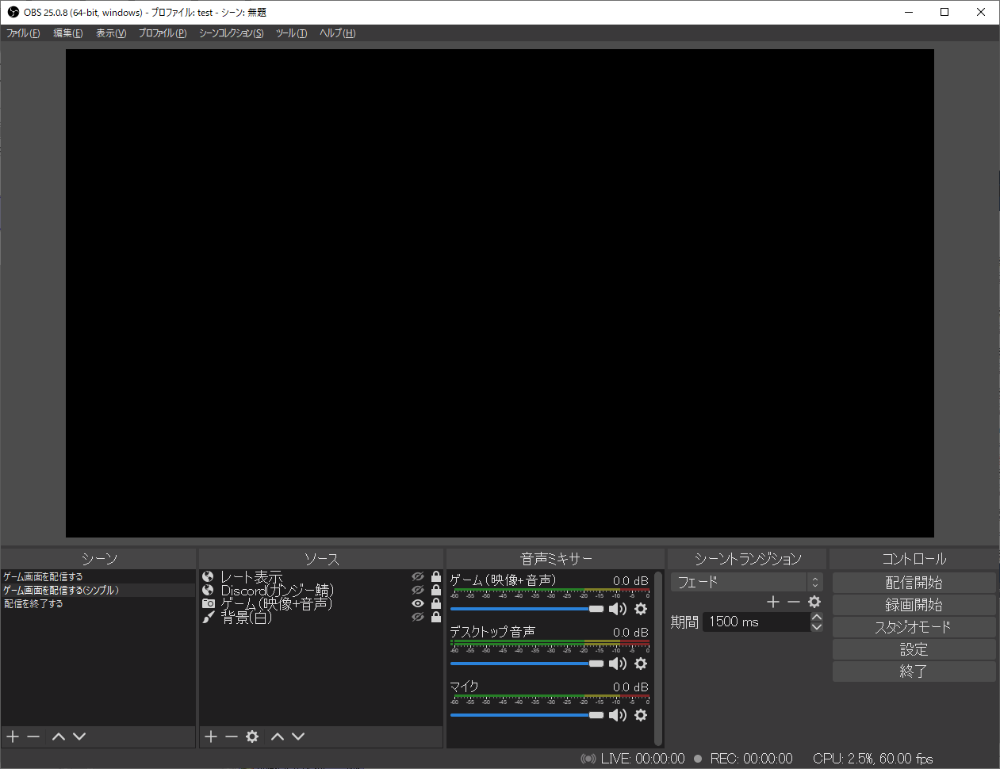

OBS Studioの設定
OBS Studioで使用している設定を以下に示します。
シーンとソース
そんなに凝った配信はしていないので、ソースはほぼ「映像キャプチャデバイス」しか使っていません。
配信を終わるときに画面を暗転させるために「配信を終了する」シーンを用意してあります。ただの真っ暗なシーンです。
映像キャプチャデバイスのプロパティ

こんな感じです。設定内容は使用しているキャプチャーボードによって全然違ってくると思います。
オーディオの詳細プロパティ

マイクとデスクトップ音声の同期オフセットに「80ミリ秒」を指定しています。マイクとデスクトップ音声をゲーム音に比べて80ミリ秒遅らせる、という設定です。
キャプチャーボードの性能にもよると思いますが、私が使用しているキャプチャーボードでは、ゲームの映像や音声の受信に80ミリ秒ほどの遅延が見られるので、それに合わせるための設定です。
他人のゲーム配信を見ていて「なんかキャラクターが死ぬ直前からもう配信者の悲鳴が聞こえるな」と感じたことがないでしょうか。その原因はたぶんキャプチャーボードの遅延だと思います。
マイクのフィルタ


【ノイズゲート】PCのファンの音を始めとする生活音や環境音など「声よりも小さい音量で鳴り続けているような雑音」を無視するためのフィルタです。「開放閾値」で設定した音量よりも小さい音しかマイクに入っていない間、OBSは完全にマイクを無視します。Discordにも同じ機能がありますね。
【ゲイン】音量を増幅するフィルタです。もちろん声とともにノイズも増幅されますので注意。
【ノイズ抑制】ノイズ部分だけを消して声をクリアにするフィルタです。OBS Studioのバージョン26からRNNoiseが追加されました。従来のフィルタ(Speex)よりもこちらのほうが綺麗になります。
【リミッター】マイクの音量が指定した音量を超えないようにするフィルタです。これを設定しておけば、思わず大声が出たり、「ゲイン」が利きすぎて爆音になったりしても安心です。
音声フィルタは順番にも意味がある（上から順にフィルタがかかる）ので気を付けてください。
参考: OBSの音声フィルタの使い方、音質を最高レベルに引き上げよう！
デスクトップ音声のフィルタ

念のため「リミッター」だけ付けています。
[設定]>[出力]>[配信]

出力モードを「基本」から「詳細」に変更しています。
エンコーダとして「QuickSync H.264」（「x264」以外のもの。環境によっては他の名前が出る）を使用すると、動作がかなり軽くなります。（その代わり、「x264」のときに比べてビットレートをたくさん盛ってやらないと画質が悪くなります。処理は早いけど圧縮効率が悪いということ。）
ビットレ―トは9000 Kbps。（720pで配信したいときは5000 Kbpsにします。）
参考: 【配信者さん向け】超簡単！低負荷で高画質な配信をしよう！配信設定教えます！
[設定]>[出力]>[音声]

192 Kbpsを指定しています。たぶん128 Kbpsでよくて、おそらく私の耳では128 Kbpsと192 Kbpsを聞き分けられない。
[設定]>[映像]

「基本解像度」「出力解像度」をともに「1920x1080」、フレームレートを「60」にしています。（720pで配信したいときは「基本解像度」「出力解像度」をともに「1280x720」にします。）
[設定]>[詳細設定]

プロセスの優先度を「高」に変更しています。